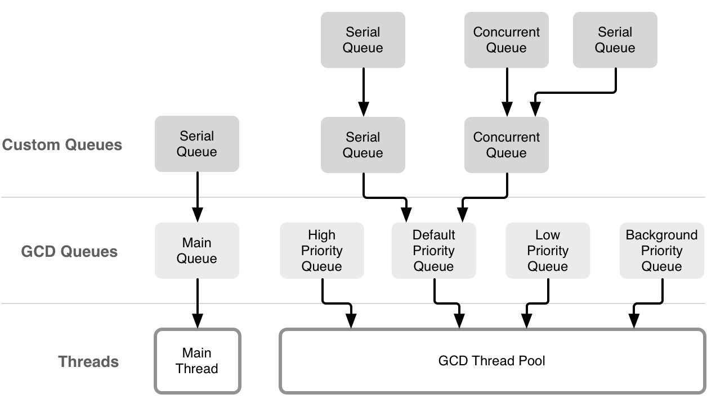

前言
Hi Coder，我是 CoderStar！
今天给大家带来多线程系列的第二篇文章 — GCD，其大概率是我们在使用多线程时最常用的方式了。
GCD 全称是 Grand Central Dispatch，翻译过来就是大规模中央调度。根据官方文档，它的作用是：通过向系统管理的调度队列中提交任务，在多核硬件上同时执行代码。它提供了一套机制，让你可以充分利用硬件的多核性能，并且让你不用再调用那些繁琐的底层线程 API，编写易于理解和修改的代码。
对开发者而言，面对的不再是上一篇文章iOS多线程-Thread所描述的线程，CGD将线程概念模糊掉，开发者转而面对的是更上层的队列和任务，不再需要考虑线程的周期以及调度等等，这些交由GCD内部处理就好。
本文对一些概念性的东西可能会一笔带过，主要介绍日常开发的一些经验。同时更多细节大家可以看苹果开源出来关于GCD的源码—swift-corelibs-libdispatch，同时我们通过源码也能了解到GCD的底层API都是用C写的。
队列
一般情况下我们可以将队列分为串行和并行两种，其中主队列是一种特殊的串行队列，全局队列是一组特殊的并行队列。
构造函数
下列为队列的构造函数
1 | public convenience init(label: String, |
介绍一下各个参数的作用：
label
附加到队列的字符串标签，方便在调试时对其进行唯一标识，一般使用反向 DNS 的命名样式，如com.star.csQueue.
qos
与队列关联的服务质量级别。该值确定系统调度任务执行的优先级，类型为DispatchQoS。
attributes
包含两个属性
concurrent：标识队列为并行队列initiallyInactive：标识运行队列中的任务需要动手触发（未添加此标识时，向队列中添加任务会自动运行），触发时通过queue.activate()方法。
autoreleaseFrequency
这个属性表示 autorelease pool 的自动释放频率， autorelease pool 管理着任务对象的内存周期。包含三个属性：
inherit：继承目标队列的该属性workItem：跟随每个任务的执行周期进行自动创建和释放never：不会自动创建 autorelease pool，需要手动管理。
一般任务采用 .workItem 属性就够了，特殊任务如在任务内部大量重复创建对象的操作可选择 .never 属性手动创建 autorelease pool。
target
这个属性设置的是队列的目标队列，即实际上会将该队列的任务放到指定队列中运行。其实在程序中手动创建的队列，最终都会指向系统自带的主队列或者全局队列。 默认情况下，指向的是优先级为default的全局队列。
需要特别注意的是，在 Swift 3 及之后，对目标队列的设置进行了约束，只有两种情况可以显式地设置目标队列，具体原因可看DispatchQueue setTarget问题
- 初始化方法中，指定目标队列。
- 初始化方法中，
attributes设定为initiallyInactive，然后在队列执行，activate()之前可以指定目标队列。
其实利用这个属性，我们可以完成一些所谓的骚操作，比如将多个并行队列的异步任务手动变成同步执行。

qos 属性扩展
如果大家对上次的iOS多线程-Thread还有印象的话，想必会对Thread的qualityOfService属性有点印象，其类型为QualityOfService；iOS 多线程另外一个比较关键的结构Operation也有一个一样的属性。
至于 GCD，其类似属性便为DispatchQoS类型，其为一个 struct类型，不止队列有这个属性，任务也有这个属性，换句话说，其实这个属性主要是作用在任务上的，源码解析可见下文的DispatchWorkItem节。如果不想阅读源码，我们通过官方文档看下其定义描述也清楚，The quality of service, or the execution priority, to apply to tasks.，一个tasks概括了一切。
但是需要注意的是 global 队列创建的时候其 qos 参数类型为DispatchQoS.QoSClass，为DispatchQoS结构体下的一个enum类型，那两者的区别是什么呢？
个人猜测是这样的，不一定正确，有比较清楚的同学还望不吝赐教。
DispatchQoS.QoSClass文档定义描述为Quality-of-service classes that specify the priorities for executing tasks.，表明为执行任务的优先级，这里是指真正调度任务管理者自身的优先级，也就是全局并行队列，我们也可以看到这个属性目前只应用在global队列上。DispatchQoS.QoSClass描述的是最终调度队列 — 全局并行队列的优先级（对应到底层线程池也可能是具体线程的优先级），那DispatchQoS描述的是任务项的优先级。
该类属性其实都表示服务质量等级，相关具体细节可查看Prioritize Work with Quality of Service Classes
方法、属性
1 | // 队列挂起 |
串行队列
串行队列主要是保证队列中的任务按照加入顺序依次执行，也就说后加入的任务必须等到同队列前面的任务都执行完毕之后才会执行。串行队列执行任务时候不允许被当前队列中的任务阻塞（会发生死锁），但可以被其他队列任务阻塞。
1 | let serialQueue = DispatchQueue(label: "com.star.serialQueue") |
并行队列
1 | // 并行队列创建 |
并行队列不需等待之前的任务执行完毕，任务并行执行。
主队列
1 | let mainQueue = DispatchQueue.main |
主队列，是一个特殊的串行队列，其永远运行在主线程中，它主要处理 UI 相关任务，也可以处理其他类型的任务。
同时需要注意一下主队列与主线程之间的区别。主队列一定是运行在主线程中，但是主线程却不只运行主队列，还可以运行其他的队列。
所以我们一般可以看到下列这样的代码，这段代码在Kingfisher中有相应使用。
1 | extension DispatchQueue { |
乍一看，觉得这样写是不是没必要，其实不然，这样写有两个好处
- 避免某些情况下切换非主队列到主队列，造成不必要的切换队列的开销；
- 同时避免切换队列造成的执行时序问题；
代码举例，解释见相应注释
1 | override func viewDidLoad() { |
全局并行队列
全局并行队列，存在 5 个不同的 Qos 级别，可以使用默认优先级，也可以单独指定。
1 | // 构造函数 |
类型为：DispatchQoS.QoSClass，下列前五个选项优先级从低到高。
- background
- utility
- default
- userInitiated
userInteractive
unspecified
任务
同步、异步是对任务的描述，不是对线程的描述。在 GCD 中，对开发者而言，任务才是关注的操作单位，上述的队列只是对任务进行管理和调度。
同步任务
1 | // 同步任务 |
同步任务会阻塞当前线程，不会开辟线程；任务会直接在当前线程执行，任务完成后恢复线程原任务；
使用同步任务在一些情况下会出现死锁情况，其表现为出现错误EXC_BAD_INSTRUCTION。
- 在主线程使用 sync
1 | override func viewDidLoad() { |
- 串行队列同步任务中开启同步任务
队列 1 中有同步任务 A 正在执行，A 任务执行过程中又向队列 1 中加入了一个新的同步任务 B，此时会发生死锁。解释一下死锁发生的原因，因为是串行队列，所以 B 任务需要等到 A 任务执行完毕之后才能执行，但是 A 任务被 B 任务阻塞了线程，需要 B 任务执行完毕之后才可以继续执行，就造成了 A 等 B，B 等 A 的现象，产生死锁。
1 | let serialQueue = DispatchQueue(label: "serialQueue") |
- 串行队列异步任务中开启同步任务
1 | let serialQueue = DispatchQueue(label: "serialQueue") |
异步任务
1 | // 异步任务 |
异步任务不会阻塞当前线程，会开辟新的线程（主队列除外）。
栅栏函数
1 | queue.async(flags: [.barrier]) { |
栅栏任务的主要特性是可以对队列中的任务进行阻隔，执行栅栏任务时，它会先等待队列中已有的任务全部执行完成，然后它再执行，在它之后加入的任务也必须等栅栏任务执行完后才能执行。栅栏函数需要放在并行队列中才能真正发挥其作用。
栅栏函数不能用在全局并发队列中，即使加入不起作用，作用会与普通的同步、异步任务相同。苹果官方也规定了不允许在全局并发队列中使用栅栏函数。
其实这个很好理解，上文已经介绍过，自定义队列最终还是会指向全局队列或者主队列，所以如果栅栏函数对全局队列起作用，你品一下…
对于栅栏函数，还有一个比较典型的应用场景，也是面试时经常问的，就是多读单写场景，代码示例如下：
1 | // 并行队列，使读的时候可以并行读 |
当然对于该场景，还有读写锁的方案，后面会有文章单独介绍。
DispatchWorkItem
我们一般往队列中加入任务是直接使用闭包，其实我们还有另外的选择，就是 DispatchWorkItem，即任务对象。比如上述的栅栏函数就有任务对象的写法。
1 | let task = DispatchWorkItem(flags: .barrier) { |
其实闭包方式只是 CGD 提供给开发者的一种便捷使用方式，其内部使用的还是
DispatchWorkItem。我们可以通过上面说的CGD源码看出一些端倪。Queue.swift，253行-281行。 详情见下列代码及注释。
1 | public func async( |
其构造函数为
1 | public init(qos: DispatchQoS = .unspecified, |
其中qos我们在上文中队列部分已经看到了，那看到这里估计有同学会有疑问，那队列的qos和任务的qos之间是什么关系呢，这个需要大家去看下源码，看一下_dispatch_continuation_init这个函数，其内部会根据传入的参数组成一个最终的qos，传入的参数包括队列、任务以及上述构造函数中的flags。
至于flags，其种类按照作用可以分为两组：
执行情况
- barrier
比较常用，不再解释
detached
表明 DispatchWorkItem 会无视当前执行上下文的参数 (QoS class, os_activity_t 和进程间通信请求参数)。
如果直接执行 DispatchWorkItem，在复制这些属性给这个 block 前，block 在执行期间会移除在调用线程中的这些属性。
如果 DispatchWorkItem 被添加到队列中，block 在执行时会采用队列的属性，或者赋值给 block 的属性。assignCurrentContext
表明 DispatchWorkItem 在被创建时，应该被指定执行上下文参数。这些参数包括：QoS class, os_activity_t 和进程间通信请求参数。
如果 DispatchWorkItem 被直接调用，DispatchWorkItem 在调用的线程中将采用这些参数。
如果 DispatchWorkItem 被提交到队列中，这些参数会被提交时的执行上下文中的参数替代。
如果 QoS 类为 DISPATCH_BLOCK_NO_QOS_CLASS 或 dispatch_block_create_with_qos_class 生成的值，那么这个值会取代当前的值。
- barrier
- QoS 覆盖信息
- noQoS // 不指定 QoS，由调用线程或队列来指定。
- inheritQoS // DispatchWorkItem 会采用队列的 QoS class，而不是当前的。
- enforceQoS // DispatchWorkItem 会采用当前的 QoS class，而不是队列的。
那DispatchWorkItem与普通闭包方式有哪些区别呢？其中比较大的区别是DispatchWorkItem因为是对象的原因会比常用的闭包方式多出一些操作方法来，如：
1 | // 在当前队列中执行当前DispatchWorkItem任务 |
比如cancel方法可以让我们对加入到队列但是还未执行的任务进行取消，但是无法取消已经在执行中的任务，跟Thread有点类似。还有notify可以等待一个任务完成之后再开始其他任务，可以实现类似后面要介绍的Opertion中的依赖功能。
任务组
任务组的主要应用场景：当需要一组任务结束后再统一去执行一些操作；如等到几个没有顺序要求的网络请求成功之后再去统一刷新 UI。
任务组（DispatchGroup）主要职责：当队列中所有任务都执行完毕之后，会发出一个通知表示任务执行完毕。其中任务组判断任务执行完毕的时机是入组任务数等于出组任务数。并且需要注意的是，任务组的单位是任务，与队列无关，换句话来说就是任务组是可以跨队列的。
任务组与队列需要关联来实现上述操作，关联方式包括两种：自动关联及手动关联；
1 | let queueGroup = DispatchGroup() |
group.enter() 和 group.leave() 需要成对存在。
- 当组内没有任务时，
group.notify会直接执行； - 当任务组的入组数大于出组数，
group.notify永远不会执行； - 当出组数大于入组数，程序会 Crash。
group.notify 是异步执行的，如果想要阻塞当前线程，使任务组的任务执行完毕，可以使用 group.wait()。
可能细心的同学会将任务组和栅栏函数进行比较，因为两者之间有一点是相似的，就是等待若干个任务全部执行完毕之后再执行后续操作，确实是这样，在一定场景下，两者是可以互换的，但是也得清楚两者之间的区别。
- 栅栏函数针对的是同一个队列中的任务，而任务组执行单位为任务，可以跨队列；
- 栅栏函数中无法灵活的控制任务完成的时机，如果是普通的任务还好，如果是网络请求这种类似’双任务制’的任务，便不适用了。因为当网络请求成功发出后，队列便会认为任务执行成功，但是实际上网络请求还未成功回调，即任务还未完成。
双任务制可能表述不是很准确，这里就简单理解为网络请求发送为一个任务，网络请求接收为一个任务。
信号量
上述任务组能保证几个网络请求全部完成之后再进行统一的操作，但是无法控制网络请求执行的顺序，如果需要控制网络请求执行的顺序（比如第二个网络请求的参数需要根据第一个网络请求返回值进行控制），我们就需要用到信号量（Semaphore）了。
控制网络请求的执行顺序这种场景其实比较常见，也是面试比较常见的场景题，那除了信号量的解决方式之外，还可以利用 Operation 的任务依赖（不是简单的使用
BlockOperation或者InvocationOperation）。
其实信号量本质是控制最大并发数，但是可以利用其特性可以实现类似互斥锁的功能，如：
1 | let semaphore = DispatchSemaphore(value: 1) |
线程数
GCD 的全局队列会自动将线程数量限制在一个比较合理的数量，比如CPU比较忙，线程数量会比较少，比如比较闲，线程数量会比较多，最多为 64 个。
与之相比，自建队列创建的线程数量会偏大，最多为512个。
最后
GCD 中还有一些知识点没有讲到，如DispatchSource、DispatchIO、DispatchData，以及在定时器中的应用等等，后面可能还会再写一个续篇。
要更加努力呀！
Let’s be CoderStar!
参考资料